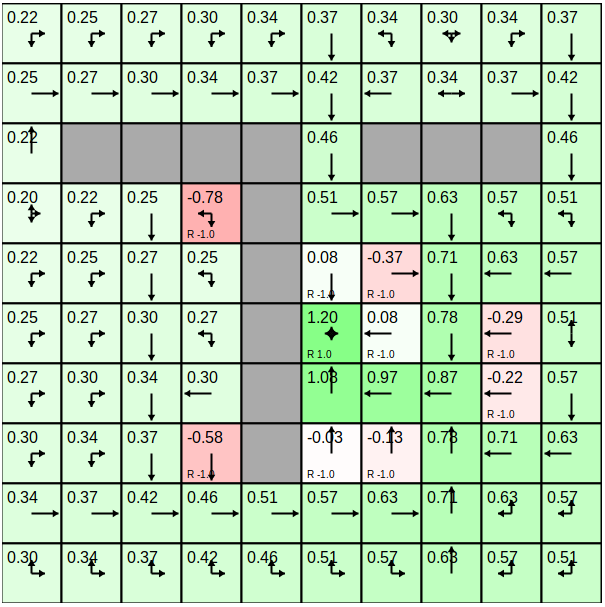

<!doctype html>
<html>
<head>
    <meta charset="utf-8">
    <meta name="viewport" content="width=device-width, initial-scale=1.0, maximum-scale=1.0, user-scalable=no">

    <title>Как работают GAN модели?</title>

    <link rel="stylesheet" href="css/reveal.css">
    <link rel="stylesheet" href="css/theme/sky.css">

    <!-- Theme used for syntax highlighting of code -->
    <link rel="stylesheet" href="lib/css/zenburn.css">

    <!-- Printing and PDF exports -->
    <script>
        var link = document.createElement('link');
        link.rel = 'stylesheet';
        link.type = 'text/css';
        link.href = window.location.search.match(/print-pdf/gi) ? 'css/print/pdf.css' : 'css/print/paper.css';
        document.getElementsByTagName('head')[0].appendChild(link);
    </script>
    <style>
        .reveal .footer {
            position: absolute;
            bottom: 1em;
            left: 1em;
            font-size: 0.5em;
            width: 103.2%;
        }
        .column-left {
          left:-8.33%;
          text-align: left;
          float: left;
          width: 50%;
          z-index:-10;
        }

        .column-right {
          left:31.25%;
          top: 75px;
          float: right;
          text-align: left;
          width: 50%;
          z-index:-10;
        }

        .reveal section {
            font-size: 34px !important;
        }
        .reveal section pre code {
            font-size: 0.7em !important;
        }
    </style>
</head>
<body>
<div class="reveal">
    <div class='footer'>
        
    </div>
    <div class="slides">

<!-------------------------------------------------------------------------------------------------->

        <section id="00" data-markdown="" data-background="img/00-background.png">
        </section>
        <!--<section id="01" data-markdown="">-->
            <!--<script type="text/template">-->
                <!--### Скромный слайд-->

                   <!-- - занимаюсь разработкой программного обеспечения N лет-->
                   <!-- - в-основном, бэкенд-->
                   <!-- - сталкивался с разными задачами, от оконных библиотек до бигдаты-->
                   <!-- - попутно изучил много языков программирования и инструментов-->
            <!--</script>-->
        <!--</section>-->
        <!--<iframe width="560" height="315" src="https://www.youtube.com/embed/Lt-KLtkDlh8?t=55" data-autoplay=""-->
                <!--frameborder="0" allow="accelerometer; autoplay; encrypted-media; gyroscope; picture-in-picture"-->
                <!--allowfullscreen></iframe>-->

        <section id="01.0" data-markdown="" data-state="something">
            <script type="text/template">
                ### История

                - Шашки (1959)
                - Победа над чемпионом мира в нарды (1992)
                - Управление вертолётом (2008)
                - Обучение робота ходьбе, Robocup Soccer
                - Игры ATARI (2014)
                - AlphaGo (2016)
                - AlphaZero, AlphaStar, OpenAI Five
            </script>
        </section>
        <section id="01.1" data-markdown="" data-state="something">
            <script type="text/template">
                ### Примеры использования, 1
                [Learning to Swing-Up and Balance from Scratch](https://youtu.be/Lt-KLtkDlh8)

                <video height="400" width="800" controls="" data-autoplay="" src="img/01-cartpole-edited.mp4"></video>
            </script>
        </section>
        <section id="01.2" data-markdown="" data-state="something">
            <script type="text/template">
                ### Примеры использования, 2
                [Робот, бросающий вещи](https://tossingbot.cs.princeton.edu/)

                
            </script>
        </section>
        <section id="01.3" data-markdown="" data-state="something">
            <script type="text/template">
                ### Примеры использования, 3

                [TossingBot: Learning to Throw Arbitrary Objects](https://youtu.be/f5Zn2Up2RjQ)
                <video height="400" width="800" controls="" data-autoplay="" src="img/01-tossingbot-10k.mp4"></video>
            </script>
        </section>
        <section id="01.4" data-markdown="" data-state="something">
            <script type="text/template">
                ### Примеры использования, 4

                [Atari - Solving Games with AI](https://towardsdatascience.com/atari-reinforcement-learning-in-depth-part-1-ddqn-ceaa762a546f)

                
                
            </script>
        </section>
        <section id="01.5" data-markdown="" data-state="something">
            <script type="text/template">
                ### Примеры использования, 5

                [OpenAI Gym github](https://github.com/openai/gym)

                
            </script>
        </section>

        <section id="02.1" data-markdown="" data-state="something">
            <script type="text/template">
                ### Основные элементы RL, 1
                <div class="column-left">
                    
                </div>
                <div class="column-right">
                    <ul>
                        <li>Агент (agent)</li>
                        <li>Среда (environment)</li>
                        <li>Вознаграждение (reward)</li>
                        <li>Стратегия (policy)</li>
                        <li>Функция ценности (value function)</li>
                        <li>Функцией ценности действия (action-value function)</li>
                        <li>Модель среды (model)</li>
                    </ul>
                </div>
            </script>
        </section>
        <section id="02.2" data-markdown="" data-state="something">
            <script type="text/template">
                ### Основные элементы RL, 2

                Немного формул, (картинка на следующем слайде)

                <p align="left">
                    `γ` - параметр обесценивания, `γ` ∈ [0, 1]<br/>
                    <br/>
                    <br/>
                    <br/>
                    <br/>
                </p>
            </script>
        </section>
        <section id="02.3" data-markdown="" data-state="something">
            <script type="text/template">
                ### Основные элементы RL, 3
                <div class="column-left">
                    
                </div>
                <div class="column-right">
                    <p>Стратегия показывает куда идти из клетки.</p>
                    <p>`V(s)` - ожидаемый выигрыш, если мы находимся в клетке,</p>
                    <p>Вознаграждение в жёлтой клетке `+1.0`, в красных `-1.0`, в остальных `0`.</p>
                    <p>`Q(s,a)` не отображена</p>
                </div>
            </script>
        </section>
        <section id="02.4" data-markdown="" data-state="something">
            <script type="text/template">
                ### Основные элементы RL, 4

                Очевидно, нам нужно найти наилучшую стратегию!
                
            </script>
        </section>
        <section id="02.5" data-markdown="" data-state="something">
            <script type="text/template">
                ### Основные элементы RL, 5
                <div class="column-left">
                    
                </div>
                <div class="column-right">
                    <p>Зная оптимальную `Q(s,a)` мы можем найти оптимальную стратегию</p>
                    <p></p>
                    <p>Но по оптимальной `V(s)` мы вообще говоря не можем это сделать</p>
                </div>
            </script>
        </section>

        <section id="03" data-markdown="" data-state="something">
            <script type="text/template">
                ### Exploration vs Exploitation

                Дилемма: использовать известные возможности как можно лучше или пробовать новые?

                
            </script>
        </section>

        <section id="04" data-markdown="" data-state="something">
            <script type="text/template">
                ### Марковский процесс

                - Дальнейший выигрыш зависит только от текущего состояния.
                - Если известны вероятности переходов, то гарантируется наличие опт стратегии


            </script>
        </section>


        <!--<section id="03.1" data-markdown="" data-state="something">-->
            <!--<script type="text/template">-->
                <!--### Основные элементы RL, 2-->


            <!--</script>-->
        <!--</section>-->

        <!--<section id="04.1" data-markdown="">-->
            <!--<script type="text/template">-->
                <!--### Сравнение с ГА-->

                <!--<video height="460" width="800" controls="" data-autoplay="" src="img/03-dl-cars.mp4"></video>-->
                <!--[Deep Learning Cars](https://youtu.be/)-->
            <!--</script>-->
        <!--</section>-->


        <!--<section id="20" data-markdown="" data-transition="none">-->
            <!--<script type="text/template">-->
                <!--### Спасибо за внимание-->
                <!---->
            <!--</script>-->
        <!--</section>-->


<!-------------------------------------------------------------------------------------------------->

    </div>
</div>

<script src="lib/js/head.min.js"></script>
<script src="js/reveal.js"></script>

<script>
    // More info about config & dependencies:
    // - https://github.com/hakimel/reveal.js#configuration
    // - https://github.com/hakimel/reveal.js#dependencies
    Reveal.initialize({
        dependencies: [
            {src: 'plugin/markdown/marked.js'},
            {src: 'plugin/markdown/markdown.js'},
            {src: 'plugin/notes/notes.js', async: true},
            {
                src: 'plugin/highlight/highlight.js',
                async: true,
                callback: function () { hljs.initHighlightingOnLoad(); }
            }
        ]
    });
    
</script>
</body>
</html>
